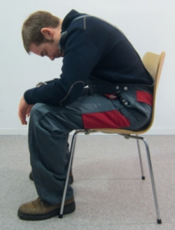

Bauarbeit ist Schwerarbeit, trotzdem wird der Körper in gewisser Weise auch trainiert. Aber nicht alle Muskeln werden gleichmäßig gefordert. Deshalb kann die Arbeit den Ausgleichssport nicht ersetzen.
Entlastung der Rückenmuskulatur – Kutschersitz
Ausgangsposition:
im Sitzen
Ausführung:
Anmerkung:
Knie 90° beugen,
Füße nicht unter den Stuhl stellen
